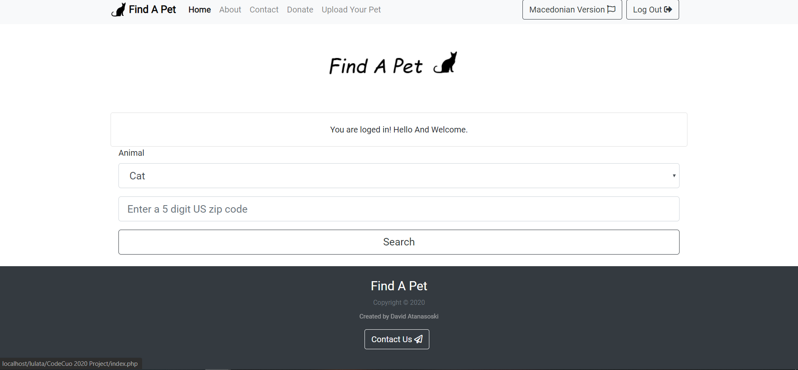
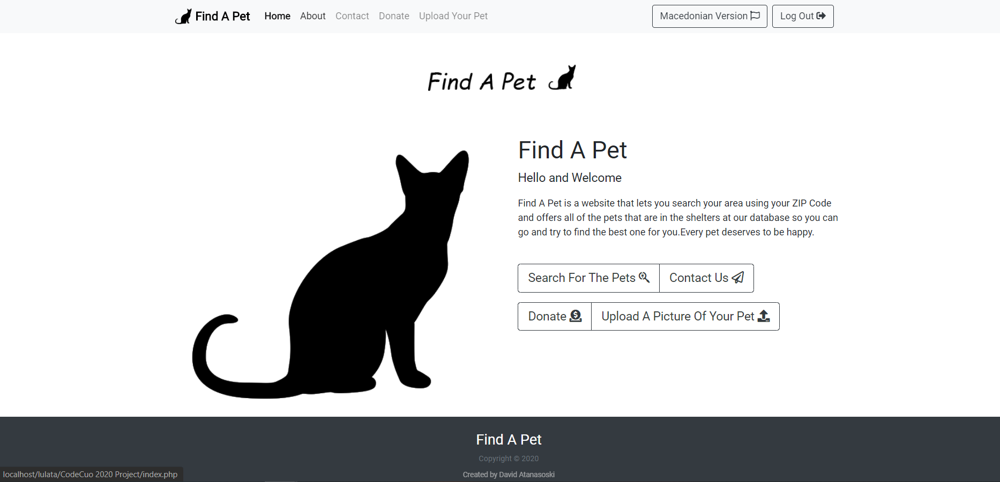
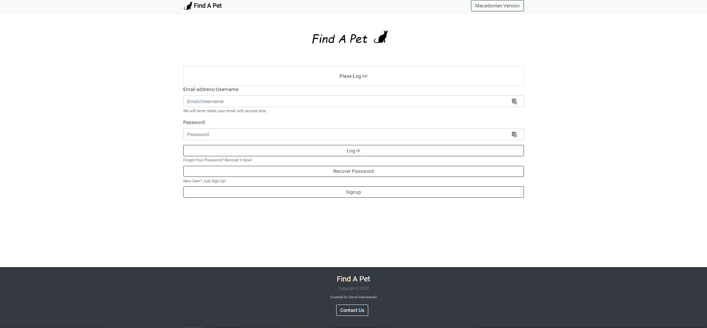
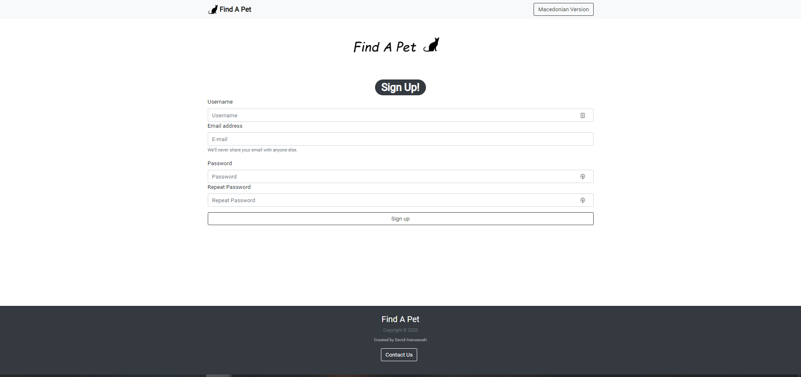
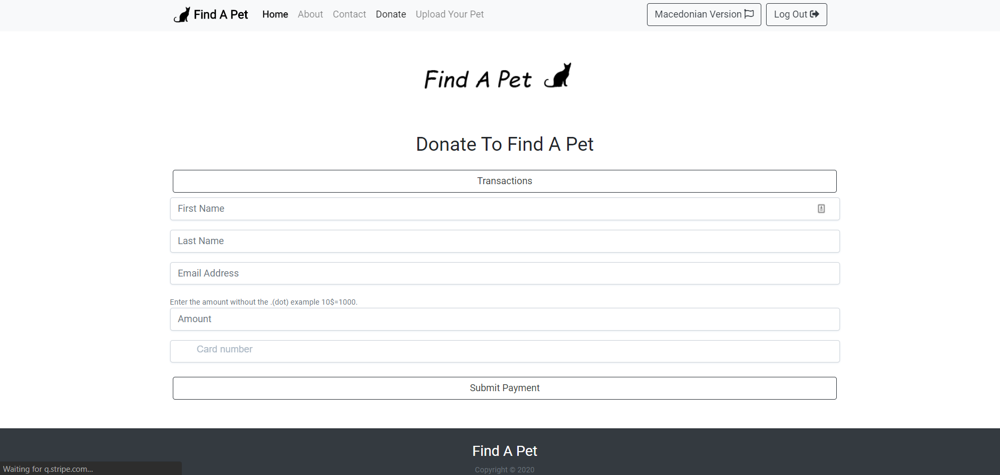
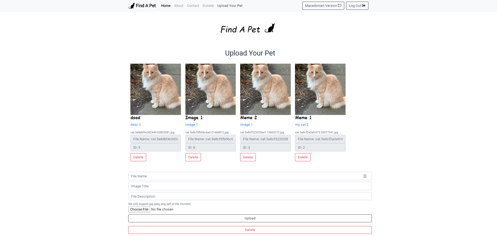

Find A Pet
This is a project i started when i started learing PHP and MySQL bases it begain in early 2020 and it was a project i did for a codecup.
The websites uses an API from perfinder who have pets in the shelter i just forward the information to the user to make it more friendly for him.
The result of the website is so that people can easialy find a pet that suits them with the information they provide.
The website also has a login/register system, a donation system and uploading photo system where the users can show the pets they got from the shelters.
I worked alot on this project and is the first big project i have ever done.
Technologies:
- - PHP
- - MySQL
- - JavaScript
- - HTML
- - CSS
- - Boostrap
Home Page

About Page

Login Page

Register Page

Donation Page

Upload Page
